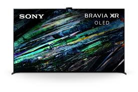

Sony Bravia XR A95L هو من أعلى وأقوى شاشات التلفزيون المتوفرة من سوني — تلفزيون OLED من الفئة “Flagship”
(الرائدة) — يجمع بين جودة صورة ممتازة جدًا،
صوت سينمائي مميز، وذكاء برمجي عالي. لو عايز شاشة تفصيلية،
ألوان واقعية جدًا، وتجربة مشاهدة أو ألعاب من الطراز الأول، A95L من أقوى الخيارات حاليًا.